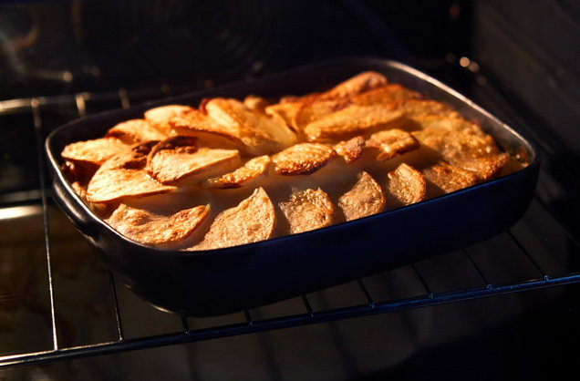

Ham and Potato Casserole

Perfect for feeding the family or a party, make a big batch and freeze for future cold nights.
This is perfect for anyone looking to save on groceries or maybe just a meal you need on the go.
There are only 4 ingredients to this dish but what it lacks in choice it makes up with flavor.
Be sure to use any of your goto spices and herbs to give it even more taste.
- Potatoes
- Shredded Ham Hock (If don't have ham hock, use smoke bacon or smoked sausage)
- Any cream soup
- Olive oil
- Preheat the oven to 230°C, or 450°F. Peel 4 large potatoes. Chop 2 potatoes into small cubes,
parboil in a pan of boiling water for 5 mins, then drain. Slice the remaining 2 potatoes as thinly as
you can and set aside
- In a medium baking dish, mix shredded ham hock, cream of soup and the cubed potatoes together to create
the filling. Top with the thinly sliced potatoes and brush with a little olive oil.
- Bake for 50-55 mins until piping hot with a crispy top.
- let cool for 5 minutes and serve.